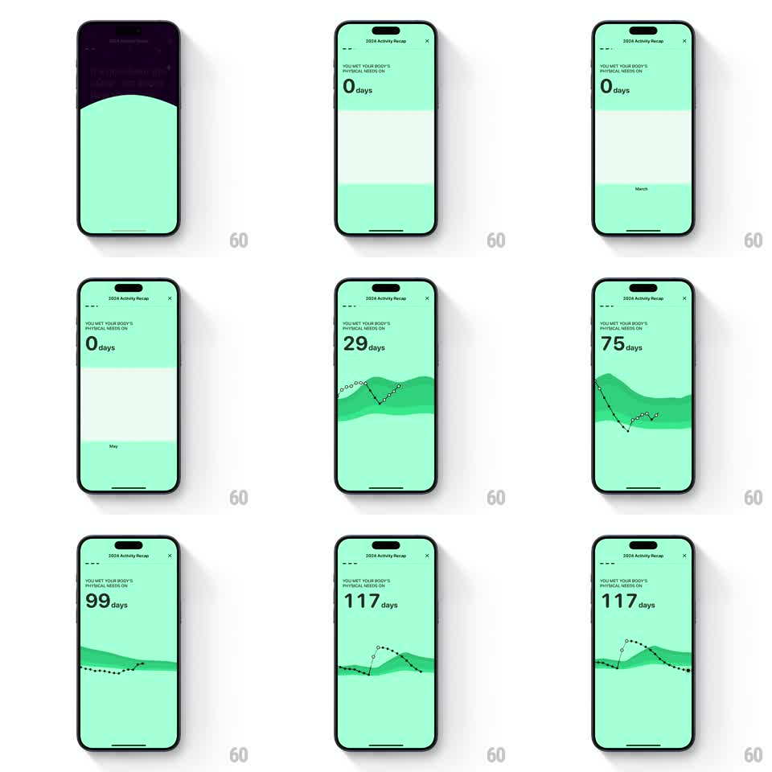

Media
Frame-by-frame

Rebuild this animation 1:1: Gentler Streak's activity recap - the year's graph draws itself as a dotted line across a layered green mountain field while the active-days counter ticks up, ending in confetti.

Rebuild this animation 1:1: Gentler Streak's activity recap - the year's graph draws itself as a dotted line across a layered green mountain field while the active-days counter ticks up, ending in confetti.
## Integration
Integration: stack-agnostic spec - springs given as stiffness/damping, timed motions as duration + curve; map every value to your framework and animation library of choice.
## Scene
Mint-green recap screen: "2024 Activity Recap" header with close button, "YOU MET YOUR BODY'S PHYSICAL NEEDS ON" kicker, a huge day counter with "days", and a layered mountain-silhouette field (banded greens) across the middle carrying a dotted line graph with circle markers. Month labels mark the axis.
## Motion spec
Pattern: drawing graph with synced counter and confetti finale, ~3s.
- The mountain bands slide in from the bottom, back to front (300ms each, 100ms stagger, ease-out).
- The dotted line then draws left to right across the year (2s, ease-in-out), each dot marker popping as the line passes (scale 0 to 1, 100ms).
- The counter ticks upward in sync with the drawing head (0 to 117, same 2s, ease-out), the number rolling.
- As the line completes, confetti bursts from the final point (600ms, radial, gravity falloff) and the counter pops (scale 1 to 1.1 and back, spring stiffness 380 damping 14).
- The graph then idles: the line holds, the mountains drift faintly (10s parallax sway).
## Calibration
- Counter and line head are locked together - the number must never run ahead of the drawing.
- The draw is one continuous ease; no speeding through flat months.
## Reduced motion
Graph and counter appear complete; no confetti.
## Don't miss
- The line is dotted with hollow circle markers at data points - not a solid stroke.
- The month label ("March", "May") slides with its band; labels are part of the mountain layer, not the line layer.